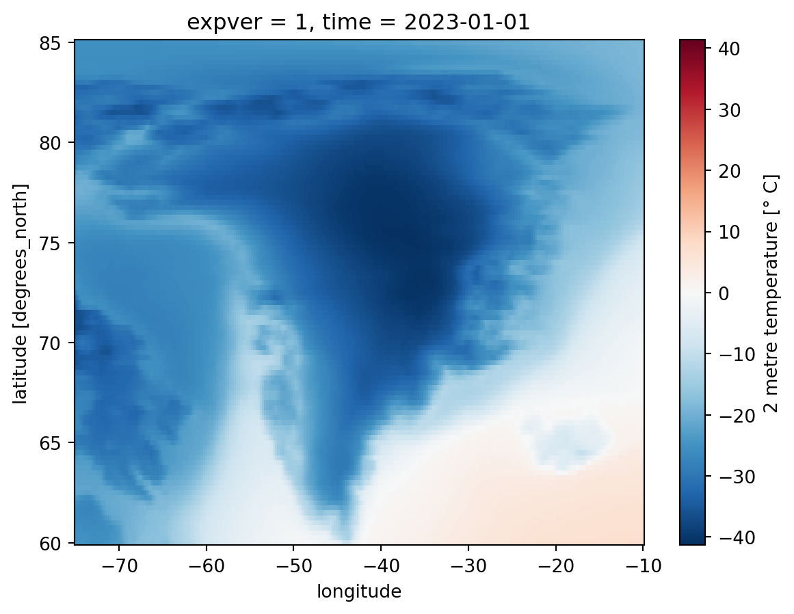

import numpy as np
import xarray as xrCARRA tutorial to download and plot means from CARRA and ERA5
Introduction
This document provides a couple of examples of how to access and plot CARRA data and climate means. It also includes a comparison with ERA5 data and climate means.
We will use metview to do the plotting and loading the data. The data can also be downloaded using metview. CHECK
Libraries for plotting and visualising data in a given projection
import matplotlib.path as mpath
import matplotlib.pyplot as plt
import cartopy.crs as ccrs
from cartopy.mpl.gridliner import LONGITUDE_FORMATTER, LATITUDE_FORMATTER
import cartopy.feature as cfeature
import cdsapi
# Disable warnings for data download via API
import urllib3
urllib3.disable_warnings()
import os
import warnings
warnings.filterwarnings('ignore')Downloading the data
There are two ways to access the CARRA data. The first one is using the MARS archive in any of the login nodes of the ATOS cluster. The second one is using the Climate Data Store (CDS) API. Before using CDS a registration is required. Follow the instructions in this link this link.
Once setup, load the API key (the one called CDS_UID) in your Set the CDS_API_KEY in your system and export it.
export CDS_API_KEY=your_keyThe API call follows the syntax below
URL = 'https://cds.climate.copernicus.eu/api/v2'
KEY = os.getenv("CDS_UID")
c = cdsapi.Client()
DATADIR = './' #path where the data will be downloadedIf you don’t know what the fields are called, one way to get the correct names is browsing the catalog in the CDS website. For CARRA data, visit this link, and then click at the bottom of the page where it says “Show API request” For ERA5 use this link
Retrieval of CARRA data. Sample levels
out_cds=f'{DATADIR}era5_monthly_t2m_greenland.nc'
if not os.path.isfile(out_cds):
c.retrieve(
'reanalysis-era5-single-levels-monthly-means',
{
'product_type': 'monthly_averaged_reanalysis',
'variable': '2m_temperature',
'year': years,
'month': [
'01', '02', '03',
'04', '05', '06',
'07', '08', '09',
'10', '11', '12',
],
'time': '00:00',
'area': area_greenland,
'format': 'netcdf',
},
out_cds)
else:
print(f"{out_cds} already downloaded")./era5_monthly_t2m_greenland.nc already downloadedChecking the contents of the file
ds = xr.open_dataset(out_cds)
ds<xarray.Dataset>
Dimensions: (longitude: 261, latitude: 101, expver: 2, time: 5)
Coordinates:
* longitude (longitude) float32 -75.0 -74.75 -74.5 ... -10.5 -10.25 -10.0
* latitude (latitude) float32 85.0 84.75 84.5 84.25 ... 60.5 60.25 60.0
* expver (expver) int32 1 5
* time (time) datetime64[ns] 2023-01-01 2023-02-01 ... 2023-05-01
Data variables:
t2m (time, expver, latitude, longitude) float32 ...
Attributes:
Conventions: CF-1.6
history: 2023-06-27 14:38:43 GMT by grib_to_netcdf-2.25.1: /opt/ecmw...Plot them without the map
ds_180 = ds.assign_coords(longitude=(((ds.longitude + 180) % 360) - 180)).sortby('longitude')
# Create Xarray Data Array
da = ds_180['t2m']
# Create Xarray Data Array
da_degc = ds['t2m'] - 273.15
da_degc = da - 273.15
da_degc = da_degc.assign_attrs(da.attrs)
da_degc.attrs['units'] = '° C'
import matplotlib as mpl
cmap = mpl.cm.coolwarm
#cmap = mpl.cm.RdBu_r
levels=np.linspace(-45,45,20)
da_degc[0,0,:,:].plot.contourf(cmap=cmap,levels=levels)<matplotlib.contour.QuadContourSet at 0x7ff5e7c4a810>
Get some carra data, in this case in grib2 format
fin_carra=os.path.join(DATADIR,"means_gribmean","t2m_mean.grib2")
import pygrib
ds_carra=xr.open_dataset(fin_carra, engine='cfgrib', filter_by_keys={'typeOfLevel': 'heightAboveGround', 'topLevel':2})
ds_carra<xarray.Dataset>
Dimensions: (y: 1269, x: 1069)
Coordinates:
time datetime64[ns] ...
step timedelta64[ns] ...
heightAboveGround float64 ...
latitude (y, x) float64 ...
longitude (y, x) float64 ...
valid_time datetime64[ns] ...
Dimensions without coordinates: y, x
Data variables:
t2m (y, x) float32 ...
Attributes:
GRIB_edition: 2
GRIB_centre: enmi
GRIB_centreDescription: Oslo
GRIB_subCentre: 255
Conventions: CF-1.7
institution: Oslo
history: 2023-07-26T12:20 GRIB to CDM+CF via cfgrib-0.9.1...Plot the data without a projection
ds_carra["t2m"].plot() #.imshow(extent=[lons.min(), lons.max(), lats.min(),lats.max()])<matplotlib.collections.QuadMesh at 0x7ff5e70c3610>To read the data in an appropriate projection we will define some useful functions below
import copy
import pygrib
import numpy.ma as ma
import datetime
from cartopy.mpl.gridliner import LONGITUDE_FORMATTER, LATITUDE_FORMATTER
def read_vars(gribfile,params):
'''
Reads a file that contains only one time step
'''
print("in read_vars")
ds = {}
vars = copy.deepcopy(params)
f = pygrib.open(gribfile)
was_found=False
for msg in f:
for param in vars:
if vars[param]['param']== str(msg['param']) and vars[param]["level"]==msg["level"] and vars[param]["typeOfLevel"]==msg['typeOfLevel'] and vars[param]["levelType"]==msg["levelType"]:
print(f'found {vars[param]}')
vars[param]['msg'] = msg
was_found=True
if not was_found:
#quick check for when it doesnt find anything
for param in vars:
print(vars[param]['param'])
if vars[param]['param']== str(msg['param']):
print(f"{param} not found. Printing some info")
this_param=msg["param"]
this_level=msg["level"]
this_tlevel=msg['typeOfLevel']
this_ltype=msg["levelType"]
print("level :{this_level}")
print("typeOfLevel {this_tlevel}")
print("levelType {this_ltype}")
print("Original params:")
print(params)
for key in ["param","level","typeOfLevel","levelType"]:
new_params = {param:{"param":this_param,"level":this_level,
"typeOfLevel":this_tlevel,"levelType":this_ltype}}
print(new_params)
sys.exit(0)
for param in vars:
msghit = vars[param]['msg']
nx = msghit['Nx']
ny = msghit['Ny']
date = msghit['date']
hour = msghit['hour']
fcstep = msghit['step']
lons = msghit['longitudes'].reshape((ny,nx))
lats = msghit['latitudes'].reshape((ny,nx))
lat0 = msghit['LaDInDegrees']
lon0 = msghit['LoVInDegrees']
lat1 = msghit['Latin1InDegrees']
lat2 = msghit['Latin2InDegrees']
val = ma.masked_values(msghit['values'].reshape((ny,nx)),msghit['missingValue'])
name = msghit['parameterName']
vars[param]['field'] = val
dt = datetime.datetime.strptime(str(date)+str(hour),"%Y%m%d%H")
lons2 = np.where(lons>180,lons-360,lons)
lon0 = np.where(lon0>180,lon0-360,lon0)
proj = ccrs.LambertConformal(central_latitude=lat0,
central_longitude=lon0,
standard_parallels=(lat1, lat2))
ds['misc'] = {'date':dt,
'lons':lons2,
'lats':lats,
'proj':proj,
'fcstep':fcstep}
ds['params'] = vars
return dsRead again the data using the function above
params = {'t2m':{"param":"167","level":2,"typeOfLevel":"heightAboveGround","levelType":"sfc"}}
fin_carra=os.path.join(DATADIR,"means_gribmean","t2m_mean.grib2")
ds_read = read_vars(fin_carra,params)
proj = ds_read["misc"]["proj"]
print(proj)in read_vars
found {'param': '167', 'level': 2, 'typeOfLevel': 'heightAboveGround', 'levelType': 'sfc'}+proj=lcc +ellps=WGS84 +lon_0=-36.0 +lat_0=72.0 +x_0=0.0 +y_0=0.0 +lat_1=72.0 +lat_2=72.0 +no_defs +type=crs